Проекты
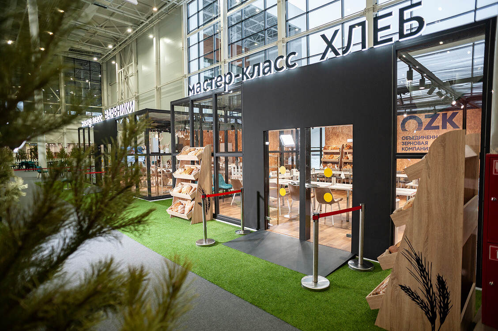


Город профессий АПК «Я в Агро»
За 6 дней построили 24 тематические площадки общей площадью 1 500 м². У каждого стенда был уникальный дизайн, конструктивные решения и технические подключения: интернет, вода, электричество, дополнительное освещение.
Подробнее


Московский выпускной 2024
За 4 дня превратили Парк Горького в площадку музыкального фестиваля, который посетили больше 30 000 гостей и посмотрели миллионы зрителей во время прямого эфира МУЗ-ТВ.
Подробнее
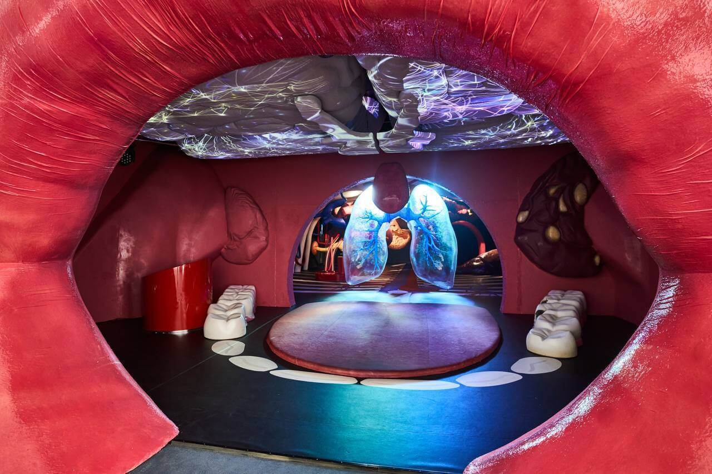

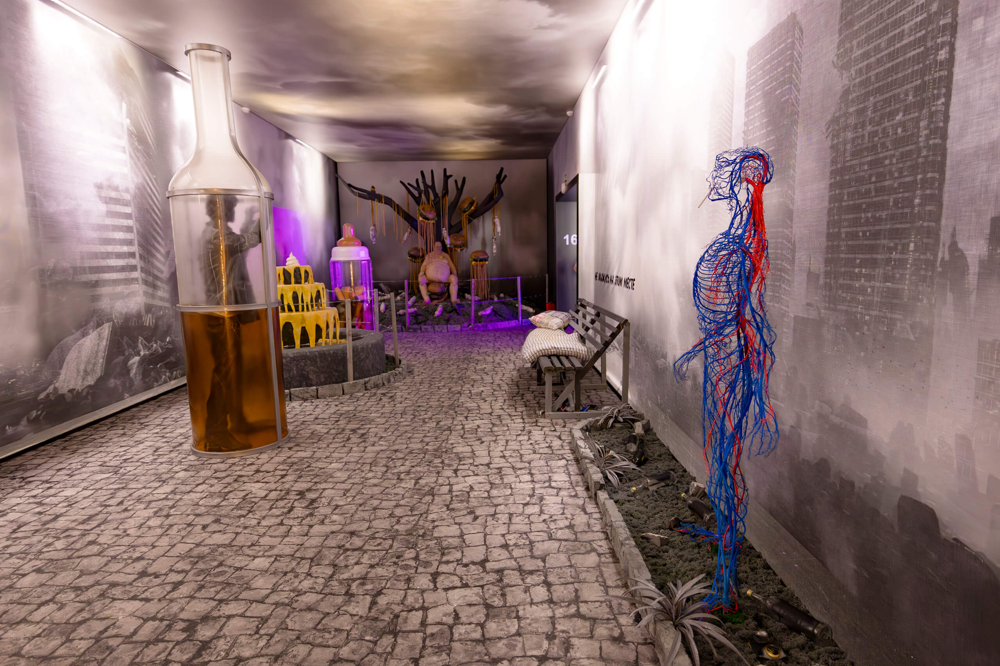
Москва 2030 в Гостином дворе
Работали над проектом 4 месяца и построили самую большую двухэтажную экспозицию в России с купольным потолком видеомэппингом площадью почти 1 400 м².
Подробнее

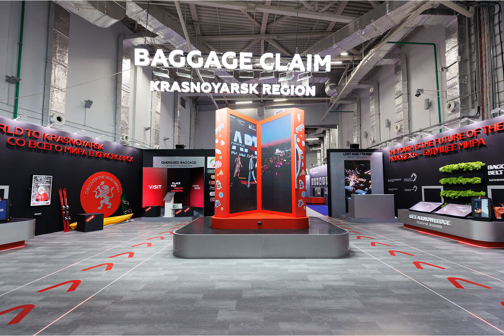
Всемирный фестиваль молодежи 2024
Москва — Сочи — Москва. По такому маршруту с января по март 2024 года курсировали наши фуры, доставляя конструкции для фестиваля. Мы выступили главным арт-дирекшеном фестиваля и взяли на себя разработку общей стилистики, концепции залов, визуализацию пространств и дизайн всех элементов — от графики до интеграции партнеров в архитектурные решения.
Подробнее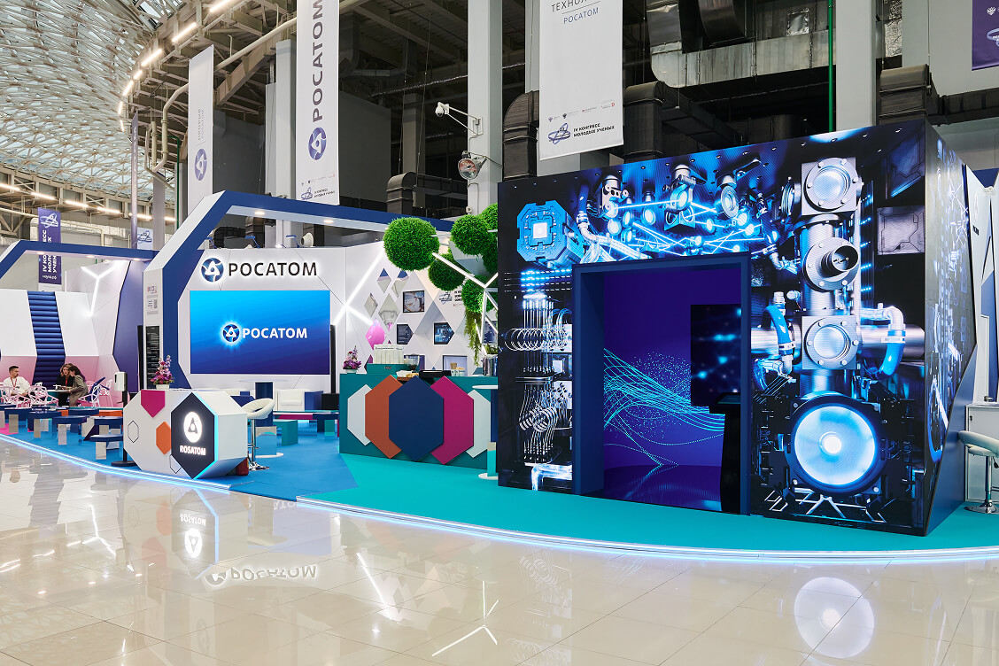


Конгресс молодых ученых. Стенды «Росатома»
Каждый выставочный проект с «Росатомом» — это вызов на креативность и мастерство команды. На протяжении 2 месяцев разрабатывали концепцию стендов, но за месяц до конгресса заказчик попросил придумать совершенно новую идею.
Подробнее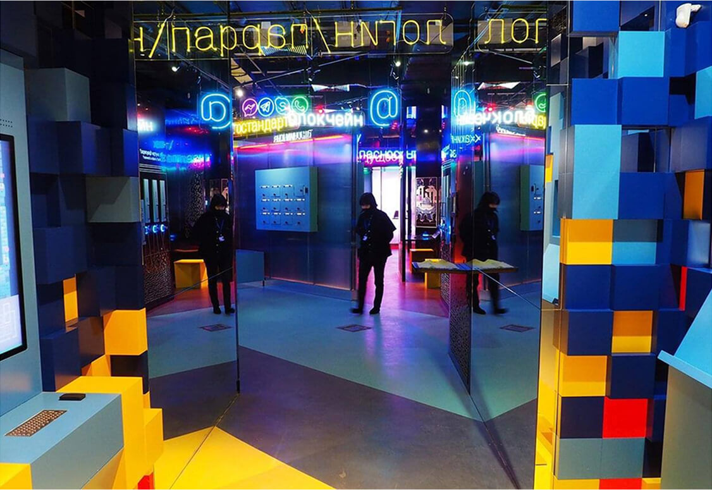


Музей криптографии
Работали над первым и единственным в России научно-технологическим музеем, который посвящен криптографии и технологиям коммуникации. Создали такое место, где сложное становится понятным, а скрытое от посторонних глаз — публичным.
Подробнее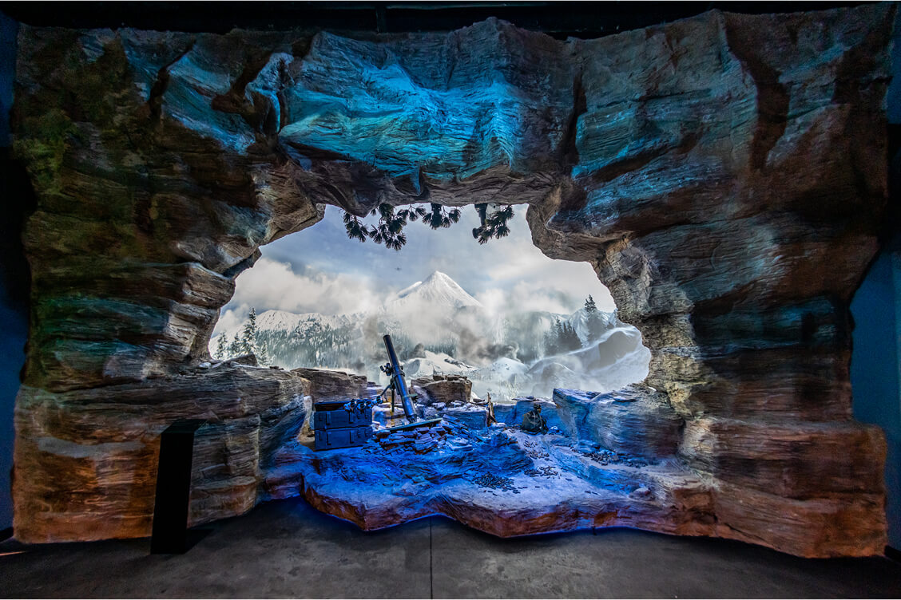


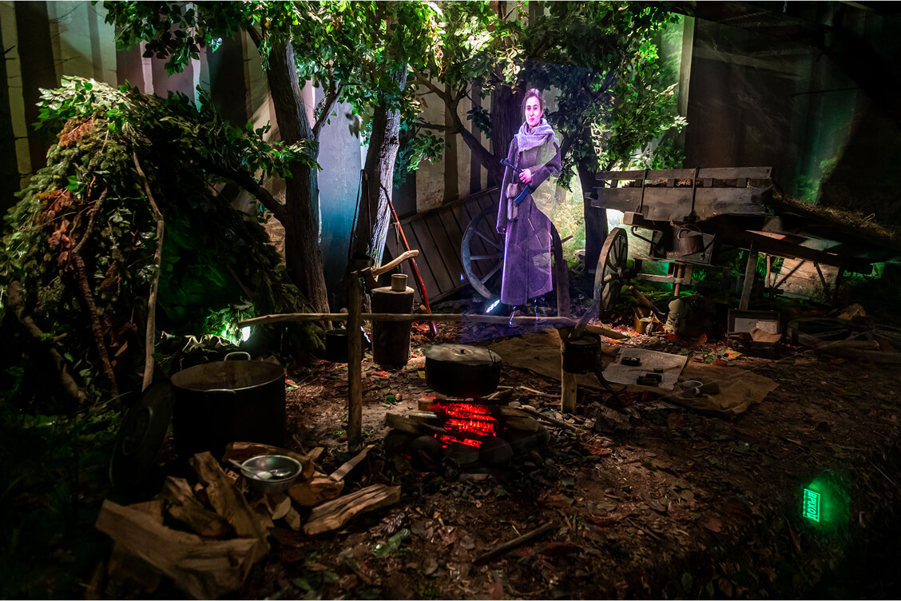
Музей «Дорога памяти»
Самый эмоциональный и высокотехнологичный проект, в котором мы участвовали. Галерея протяженностью 1418 шагов, где показана история каждого дня Великой Отечественной войны и создана максимально достоверная атмосфера событий 1941–1945 годов.
Подробнее
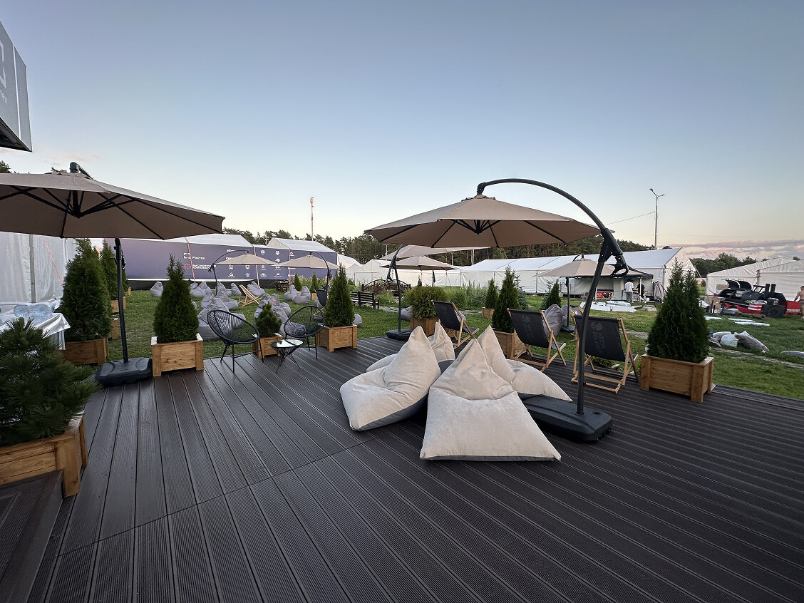

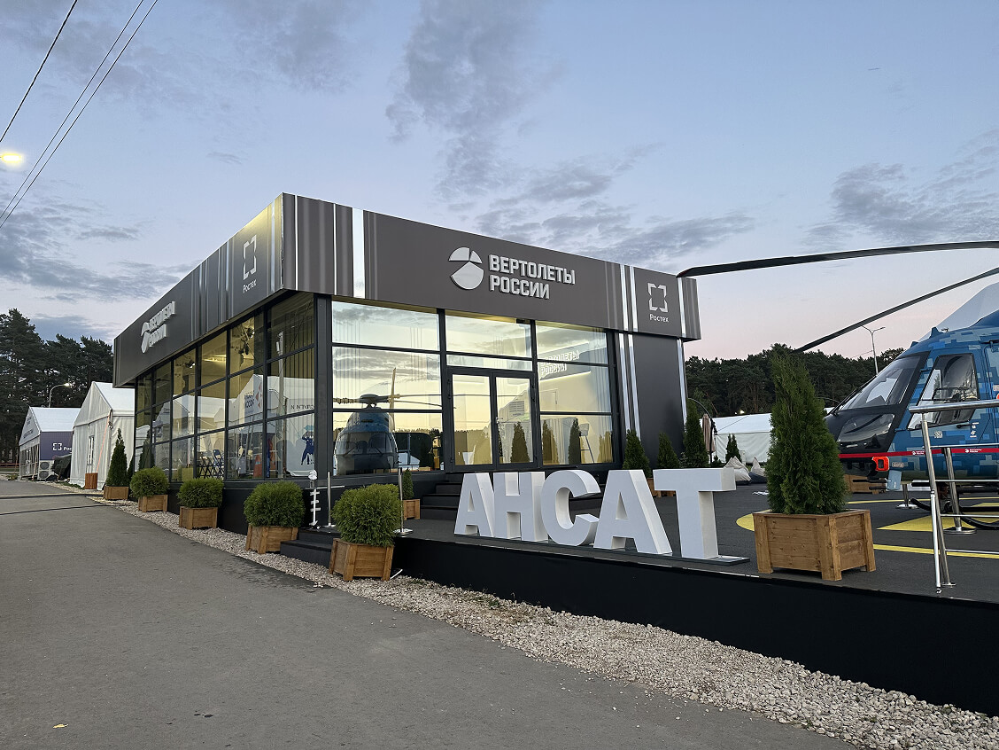
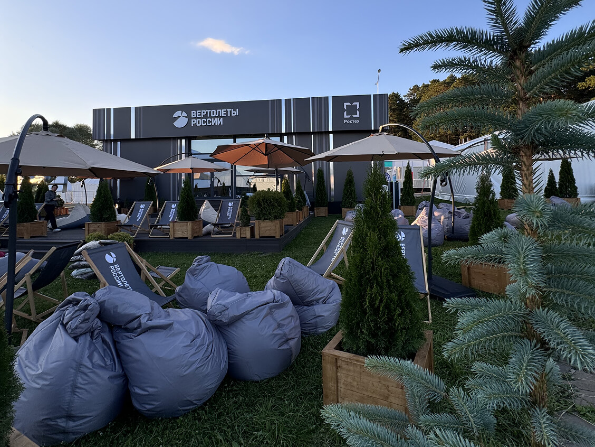
Вертолеты России
Организовали выставку на площади 500 м². Разместили вертолетную площадку, павильон для встреч и большую зону отдыха. Одной из сложностей стал неровный ландшафт и перепады высот.
Подробнее